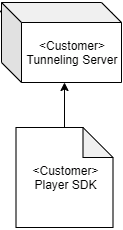

/* index.html */
<script src="library/tc.player.min.js"></script>
<div id="player" style="width:640px; height:360px;"></div>
const ToastCamPlayer = toastcam.lPlayer; /* if you install SDK, namespace 'toastcam' will exist */
The WebRTC Player requires following parameters
1). serialNo: Camera serial number (mandatory)
2). elementId: elementId where WebRTC Player will be created (mandatory)
3). startTime: video start timestamp - 13 digits (if not set this param, play live mode)
4). endTime: video end timestamp - 13 digits
5). useControl : If set 'useControl' true, you can use control buttons (play, pause, forward, backward). When click play area, control layer show up (default: false)
6). cvrJumpInterval : CVR jump interval when click forward & backward button. if use this option, 'useControl' option should be true previously (default: 5000)
7). showTime: show play timer (default : false)
8). credentialUrl: WebRTC credential GET API Url (default : '/rtc/credential')
9). candidateUrl: WebRTC candidate POST API Url (default : '/rtc/candidate')
10). offerUrl: WebRTC offer POST API Url (default: '/rtc/offer')
11). getTokenUrl : Get video play token GET API url (default: '/biz/cameras/token/:serialNo')
12). getTimelineUrl : Get video timeline GET API url (default: '/biz/cameras/:serialNo/video')
13). getCameraUrl : Get camera status GET API url (default: '/biz/cameras/:serialNo')
14). requestHeaders : Set Request Headers (not mandatory)
15). playEventHandler: Player event handler. there are the following event status - 'stream_connected', 'webrtc_server_error', 'finish', 'webrtc_not_support_browser', 'no_cvr' (not mandatory)

/* Event Play */
const data = {
serialNo: 'BC8AA30000B1',
elementId : 'player',
startTime : 1578322740915,
endTime : 1578322745915,
cvrJumpInterval : 5000,
useControl : true,
showTime : true,
credentialUrl: '/rtc/credential',
candidateUrl: '/rtc/candidate',
offerUrl: '/rtc/offer',
getTokenUrl : '/biz/cameras/token/:serialNo',
getCameraUrl : '/biz/cameras/:serialNo',
getTimelineUrl : '/biz/cameras/:serialNo/video',
requestHeaders : {"testheader": "123", "testheader2": "1234"},
playEventHandler : function (event) {
console.log('playEventHandler - event.status : ' + event.status);
}
};
let playerObj = new ToastCamPlayer(data);
/* Live Play */
const data = {
serialNo: 'BC8AA30000B1',
elementId : 'player',
useControl : true,
showTime : true,
credentialUrl: '/rtc/credential',
candidateUrl: '/rtc/candidate',
offerUrl: '/rtc/offer',
getTokenUrl : '/biz/cameras/token/:serialNo',
getCameraUrl : '/biz/cameras/:serialNo',
playEventHandler : (event) => {
console.log('playEventHandler - event.status : ' + event.status);
}
};
let playerObj = new ToastCamPlayer(data);
let playerObj = new ToastCamPlayer(data);
playerObj.destroy();
playerObj = null;